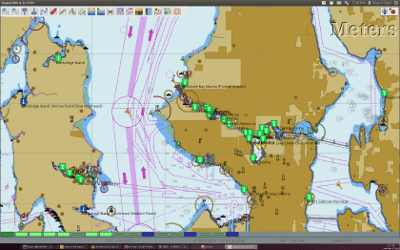
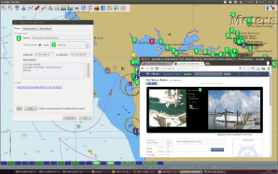
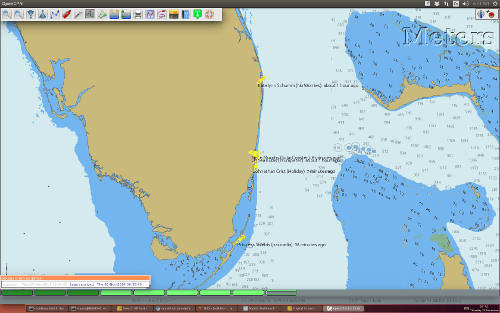
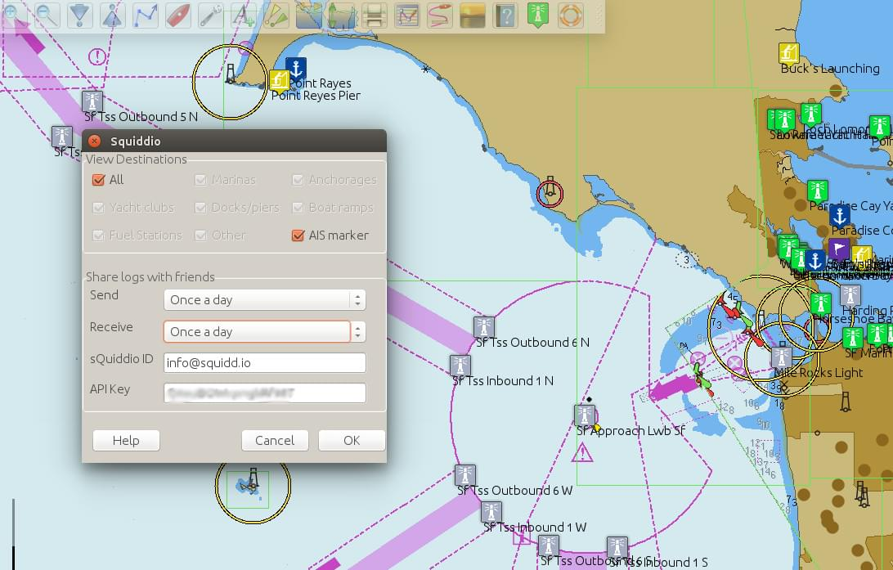

sQuiddio
Find thousands of destinations right in your Opencpn chart

sQuiddio.io
…makes its global user-sourced and user-maintained repository of sailing destinations (marinas, anchorages, yacht clubs, docks, fuel stations etc.) available as waypoints in OpenCPN* through a plugin.
The waypoint Properties box shows basic information about the Destination, such as the Destination's average user rating, address and phone number (where available) and a link to the Destination's page on sQuddio.
* OpenCPN version 3.3 or greater required
Share your seafaring knowledge with others

By following the link in the waypoint, registered sQuidd.io users can post comments about the Destination, as well as rate the Destination on attributes such as beauty, service and quality of wi-fi access (where applicable).
Can't find your favorite anchorage or marina? Report new destinations not yet available in the database.
Follow your cruising friends on your OpenCPN Chart
(version 0.4 or greater)

Share your position, SOG and COG with boats in your sQuiddio follow list , and display their current position and heading on your OpenCPN charts
View AIS Aids to Navigation (ATON) on your OpenCPN Chart
(version 0.5 or greater)

Plan your cruise ahead by locating AIS ATONs along your itinerary, before they come into your AIS range.
Use of the plugin is free of charge. (Free registration is required for certain functions).
Installing the plugin
- Look for the sQuidd.io icon in the Plugins for OpenCPN 3.3 and later section of the plugins download page.
- Select the architecture and platform of your choice, download and install the relevant installation package.
- After successful installation, the plug in should be available in the Plugins tab of your OpenCpn Options dialog box.
Using the plugin:
- In OpenCPN, go to the Options → Plugins and enable the sQuiddio plugin (no settings are required).
- To view destinations in an area:
- Right-click on the area of the chart for which you want to view available Destinations.
- Select Download local sQuiddio destinations from the contextual menu.
- To view additional information about the Destination, and a link to the sQuiddio Destination page, right click on Destination's waypoint, and select Properties.
- The waypoint dialog box includes a link to the Destination page on sQuidd.io. If you have an Internet connection, click the link and your browser should soon display the Destination's page on sQuidd.io.

- You can hide all Destinations for an area from the charts by right-clicking on the chart and selecting Hide local sQuiddio Destinations from the contextual menu. You can make the destinations visible again (without downloading them anew) by selecting the Show sQiddio destinations.
- To submit a new destination, position your cursor on the new Destination's exact location in the OpenCPN chart, right-click and select Report a Destination at this location from the contextual menu. (Note: you must have a free user account to report new Destinations.)
About sQuidd.io
sQuidd.io is a service designed and developed by boaters for boaters.
We love the sea and believe that the best way to enjoy and protect this wonderful gift of Mother Nature is to facilitate the sharing of information among boaters. This is why most of the content you find on our site is generated by other users. We encourage you to contribute your seafaring knowledge to sQuidd.io by creating destinations, rating your favorite ones and by providing information and feedback. Thanks to users like you, squidd.io is quickly becoming the most complete, comprehensive and up-to date source of cruising information in the world.